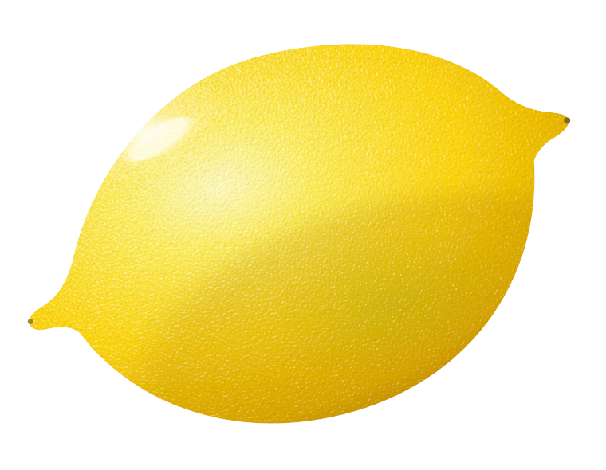
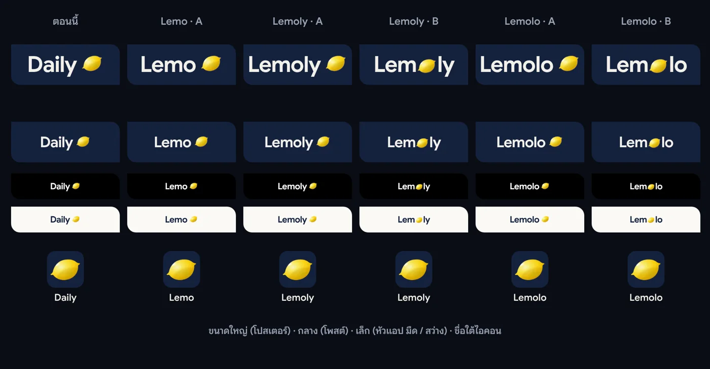
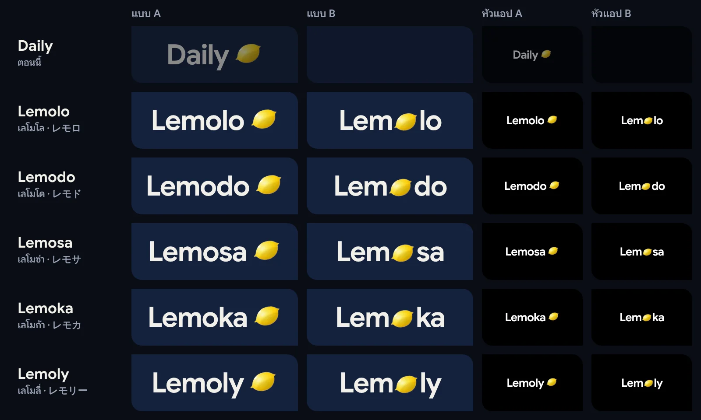

<title>Daily Rename Mockup</title>
<meta name="claude:viewport-fit-sides" content="cover">
<link rel="preconnect" href="https://fonts.googleapis.com">
<link rel="stylesheet" href="https://fonts.googleapis.com/css2?family=Anuphan:wght@400;500;600;700&display=swap">
<style>
/* Layout: Prussian masthead with the chosen wordmark, a sticky name + logo switch, then one mockup per block; flat colour blocks, leaf corners. */
:root {
  --bg: #faf9f6; --fg: #14213d; --muted: #586179; --surface: #ffffff; --surface2: #eeece6;
  --accent: #ffd23f; --accent-ink: #876800; --pr: #14213d; --on-pr: #f2f0ea; --pr2: #1d2c50; --warn: #b5410d; --good: #2f7d4f;
  --font: 'Anuphan', system-ui, sans-serif; --r: 16px;
}
@media (prefers-color-scheme: dark) { :root:not([data-theme="light"]) { --bg: #0a0d14; --fg: #f2f0ea; --muted: #9aa3b5; --surface: #121a2e; --surface2: #1b2742; --accent-ink: #ffd23f; --warn: #ff9b6a; --good: #7fd3a0; color-scheme: dark; } }
:root[data-theme="dark"] { --bg: #0a0d14; --fg: #f2f0ea; --muted: #9aa3b5; --surface: #121a2e; --surface2: #1b2742; --accent-ink: #ffd23f; --warn: #ff9b6a; --good: #7fd3a0; color-scheme: dark; }
* { box-sizing: border-box; }
body { background: var(--bg); color: var(--fg); font-family: var(--font); font-size: 16px; line-height: 1.6; }
body::before { content: ""; position: fixed; inset: 0 0 auto; height: env(safe-area-inset-top, 0px); z-index: 10; background: var(--pr); }
.wrap { max-width: 1080px; margin: 0 auto; padding-left: max(16px, env(safe-area-inset-left, 0px)); padding-right: max(16px, env(safe-area-inset-right, 0px)); }
h1, h2, h3 { margin: 0; line-height: 1.2; text-wrap: balance; }
p { margin: 0; }
.mast { background: var(--pr); color: var(--on-pr); margin-top: calc(-1 * env(safe-area-inset-top, 0px)); padding-top: calc(env(safe-area-inset-top, 0px) + 36px); padding-bottom: 36px; }
.word { display: inline-flex; align-items: center; gap: .16em; font-weight: 700; letter-spacing: -0.03em; font-size: clamp(60px, 12vw, 124px); line-height: 1; }
.word img { height: .8em; transform: translateY(-0.03em) rotate(-8deg); }
.mast p { color: #c9cfdc; margin-top: 14px; max-width: 62ch; }
.pill { display: inline-block; background: var(--pr2); border-radius: 0 10px 0 10px; padding: 4px 12px; font-size: 14px; margin-top: 14px; }
main { padding-block: 22px 64px; display: grid; gap: 24px; }
.sec h2 { font-size: 24px; margin-bottom: 6px; }
.lead { color: var(--muted); max-width: 70ch; }
.card { background: var(--surface); border-radius: 0 var(--r) 0 var(--r); padding: 18px; min-width: 0; }
figure { margin: 0; min-width: 0; }
figure img { width: 100%; height: auto; display: block; border-radius: 0 14px 0 14px; background: var(--surface2); }
figcaption { font-size: 14px; color: var(--muted); margin-top: 6px; }
.two { display: grid; grid-template-columns: repeat(auto-fit, minmax(280px, 1fr)); gap: 16px; align-items: start; }
.three { display: grid; grid-template-columns: repeat(auto-fit, minmax(220px, 1fr)); gap: 14px; }
.opt h3 { font-size: 18px; }
.opt p { color: var(--muted); margin-top: 4px; font-size: 15px; }
.tag { display: inline-block; font-size: 12px; font-weight: 700; padding: 2px 9px; border-radius: 0 8px 0 8px; background: var(--accent); color: #14213d; margin-left: 6px; vertical-align: 2px; }
.switch { position: sticky; top: env(safe-area-inset-top, 0px); z-index: 5; background: var(--bg); padding-block: 10px; display: flex; gap: 8px 18px; align-items: center; flex-wrap: wrap; }
.grp { display: flex; gap: 6px; align-items: center; flex-wrap: wrap; }
.grp > span { color: var(--muted); font-size: 15px; margin-right: 2px; }
.switch button { border: 0; font: inherit; font-weight: 700; font-size: 15px; padding: 8px 16px; border-radius: 0 12px 0 12px; background: var(--surface2); color: var(--fg); cursor: pointer; transition: transform .12s cubic-bezier(.2,.8,.2,1); }
.switch button:active { transform: scale(.96); }
.switch button[aria-pressed="true"] { background: var(--pr); color: var(--on-pr); }
.switch button:focus-visible { outline: 3px solid var(--accent); outline-offset: 2px; }
.vs { display: grid; grid-template-columns: 1fr 1fr; gap: 12px; }
.vs .lab { font-weight: 700; font-size: 14px; margin-bottom: 6px; }
.vs .lab.old { color: var(--muted); }
ul.clean { margin: 8px 0 0; padding-left: 20px; display: grid; gap: 8px; }
ul.clean li::marker { color: var(--accent-ink); }
.warn { color: var(--warn); font-weight: 700; }
.narrow { max-width: 420px; }
.tablewrap { overflow-x: auto; }
table { border-collapse: collapse; width: 100%; min-width: 640px; font-size: 15px; }
th, td { text-align: left; padding: 10px 12px; vertical-align: top; }
thead th { background: var(--pr); color: var(--on-pr); font-size: 14px; }
thead th:first-child { width: 22%; }
tbody tr:nth-child(odd) td { background: var(--surface); }
tbody tr:nth-child(even) td { background: var(--surface2); }
td:first-child { font-weight: 700; }
.plus { color: var(--good); font-weight: 700; }
.minus { color: var(--warn); font-weight: 700; }
.verdict { background: var(--pr); color: var(--on-pr); border-radius: 0 var(--r) 0 var(--r); padding: 18px; }
.verdict h2 { font-size: 22px; }
.verdict p { color: #c9cfdc; margin-top: 6px; max-width: 70ch; }
.verdict b { color: var(--accent); }
@media (max-width: 560px) { .vs { grid-template-columns: 1fr; } }
@media (prefers-reduced-motion: reduce) { * { transition: none !important; } }
</style>

<header class="mast">
  <div class="wrap">
    <div class="word" aria-live="polite"><span id="heroName">Lemolo</span></div>
    <p>ม็อกอัปชื่อใหม่แทน Daily ใช้หน้าจอจริงของแอปและสไตล์เดิมทุกอย่าง (กรมท่า + มะนาว มุมใบไม้ สีทึบ) เปลี่ยนแค่ชื่อ ยังไม่ได้แตะแอปจริง สลับชื่อและแบบโลโก้ได้ที่แถบด้านล่าง</p>
    <span class="pill">โดเมนและชื่อบัญชีในภาพเป็นตัวอย่างเท่านั้น</span>
  </div>
</header>

<main class="wrap">
  <section class="verdict">
    <h2>สรุปสั้น</h2>
    <p>ถ้าเน้น SEO ชื่อต้องเป็นคำที่ค้นแล้วเจอแต่เรา <b>Daily</b> กับ <b>Lemo</b> ไม่ผ่านข้อนี้ เหลือ <b>Lemolo</b> กับ <b>Lemoly</b> ที่ค้นแล้วยังไม่เจอใครใช้ชื่อตรงตัว ผมให้ <b>Lemolo</b> เป็นอันดับหนึ่ง เพราะไม่ใกล้คำไหนในพจนานุกรม ส่วน Lemoly ห่างจากคำอังกฤษ lemony แค่ตัวเดียว Google อาจถามว่า "หมายถึง lemony หรือเปล่า" และมือถืออาจแก้คำให้ <b>Lemoly</b> เหมาะเป็นตัวสำรอง ถ้าอยากให้ชื่อใหม่ต่อจาก Daily (ลงท้าย -ly) ทุกชื่อควรใช้โลโก้ <b>แบบ A</b> ในแอป ส่วน <b>แบบ B</b> เข้ากับ Lemolo ที่สุด เพราะมะนาวอยู่ข้างตัว o จริง</p>
  </section>

  <section class="sec card">
    <h2>ชื่อเฉพาะช่วย SEO ตรงไหน</h2>
    <ul class="clean">
      <li><b>ค้นชื่อแล้วเจอเรา:</b> คนที่เห็นคลิปแล้วไปค้นชื่อ ต้องเจอเราเป็นอันดับแรก Daily ทำไม่ได้เพราะเป็นคำทั่วไป ชื่อที่ไม่มีใครใช้จะได้ผลค้นหาทั้งหน้าเป็นของเรา</li>
      <li><b>คนที่ยังไม่รู้จักเรา</b> ค้นด้วยคำอย่าง "แอปจดรายรับรายจ่าย" หรือ "家計簿アプリ" ชื่อไม่ช่วยตรงนี้ ต้องใช้บทความและหน้าเว็บ (คำค้น 18 ภาษาอยู่ในชุดการตลาดแล้ว) จึงควรใส่ทั้งสองอย่างในชื่อหน้าเว็บ เช่น "Lemolo · แอปจดรายรับรายจ่าย"</li>
      <li><b>โดเมนของตัวเอง</b> (เช่น lemolo.com หรือ lemolo.app) จำง่ายและเป็นแบรนด์ชัดกว่าซับโดเมน ผมเช็กไม่ได้ว่าโดเมนว่างไหม เพราะเครื่องนี้เข้าระบบเช็กโดเมนไม่ได้ ลองค้นใน Cloudflare Registrar ที่ใช้อยู่ได้เลย</li>
      <li><b>ชื่อบัญชีโซเชียลตรงกันทุกที่</b> เช่น @lemolo ต้องเช็กก่อนตัดสินใจ เพราะคนค้นชื่อในแอปโซเชียลด้วย</li>
      <li><b>ย้ายตอนนี้เสียน้อยที่สุด:</b> ยังไม่มีอันดับค้นหาให้เสีย ถ้าย้ายโดเมน ให้ตั้ง redirect 301 จาก daily.limonlay.com ไปชื่อใหม่</li>
    </ul>
  </section>

  <section class="sec">
    <h2>เทียบทุกขนาด</h2>
    <p class="lead">Lemo แบบ B ตัดออกเพราะอ่านเป็น "Lem" จากใหญ่ไปเล็ก: โปสเตอร์ · โพสต์ · หัวแอป (มืด / สว่าง) · ชื่อใต้ไอคอน ดูตัวเล็กสุดเป็นหลัก เพราะคนเห็นบ่อยที่สุด</p>
    <figure class="card" style="margin-top:12px"></figure>
  </section>

  <section class="sec">
    <h2>เทียบสามชื่อ</h2>
    <div class="tablewrap" style="margin-top:10px"><table>
      <thead><tr><th></th><th>Lemo</th><th>Lemoly</th><th>Lemolo</th></tr></thead>
      <tbody>
        <tr><td>ความยาว</td><td><span class="plus">สั้น</span> 4 ตัว จำง่าย</td><td>6 ตัว ยาวกว่า Daily 1 ตัว</td><td>6 ตัว</td></tr>
        <tr><td>ต่อจาก Daily</td><td>เสียงต่างจากเดิมทั้งคำ</td><td><span class="plus">ลงท้าย -ly</span> เหมือน Daily และ limonlay ผู้ใช้เดิมเดาได้</td><td>เสียงใหม่ทั้งคำ</td></tr>
        <tr><td>อ่านออกเสียง</td><td>ไทย เลโม่ · ญี่ปุ่น レモ (ใกล้ レモン)</td><td>ไทย เลโมลี่ · ญี่ปุ่น レモリー · คนพูดอังกฤษอาจอ่านได้ 2 แบบ (LEM-uh-lee / leh-MOH-lee)</td><td>ไทย เลโมโล · ญี่ปุ่น レモロ · เกาหลี 레몰로 · <span class="plus">อ่านได้แบบเดียว</span></td></tr>
        <tr><td>สะกด</td><td><span class="plus">ง่าย</span></td><td><span class="minus">อาจพิมพ์เป็น lemony</span> (คำอังกฤษที่มีอยู่แล้ว มือถืออาจแก้คำให้อัตโนมัติ) หรือ lemolly</td><td><span class="plus">ฟังครั้งเดียวสะกดได้</span> อาจมีคนพิมพ์เป็น lemollo บ้าง</td></tr>
        <tr><td>ชื่อซ้ำ</td><td><span class="minus">มีแล้วหลายที่:</span> แอปแชท 17+ "Lemo - Chill &amp; Chat", แอปการศึกษา Lemo, แอปฟิตเนส LEMO, ขั้วต่อไฟฟ้า LEMO</td><td><span class="plus">ยังไม่เจอแอปชื่อนี้</span> ที่ใกล้กัน: แอปวิดีโอ Lumoly (18+) และเครื่องหมายการค้า LEMOLLY ในสหรัฐ (หมวดเสื้อผ้า / อิเล็กทรอนิกส์ ตามผลค้นหา ยังไม่ได้ยืนยัน)</td><td><span class="plus">ยังไม่เจอใครใช้ชื่อนี้</span> ที่ใกล้กันคือภาษา Lemolang บนเกาะสุลาเวสี (ไม่เกี่ยวกัน)</td></tr>
        <tr><td>ใกล้คำในพจนานุกรม (SEO)</td><td><span class="minus">ชนแบรนด์อื่นหลายราย</span></td><td><span class="minus">ห่างจาก lemony ตัวเดียว</span> Google อาจแก้คำค้นให้</td><td><span class="plus">ไม่ใกล้คำไหน</span></td></tr>
        <tr><td>ค้นหาเจอ</td><td>คำสั้นทั่วไป ผลค้นหาปนกับของอื่น</td><td><span class="plus">คำเฉพาะ</span> ค้นแล้วเจอเราง่ายกว่า</td><td><span class="plus">คำเฉพาะ</span> ค้นแล้วเจอเราง่าย</td></tr>
        <tr><td>โลโก้แบบ B</td><td>มะนาวอยู่ท้ายคำ คนจะอ่านเป็น "Lem"</td><td><span class="plus">มะนาวอยู่กลางคำ</span> ตัวใหญ่อ่านเป็น o ได้ดีกว่า ตัวเล็กยังอ่านยาก</td><td><span class="plus">มะนาวอยู่ข้าง o จริง</span> อ่านเป็น o ชัดที่สุดในสามชื่อ ตัวเล็กยังอ่านยาก</td></tr>
        <tr><td>ความหมายในภาษาอื่น</td><td><span class="minus">อินโดนีเซีย:</span> คำสแลง "lemot" แปลว่าช้า อืด</td><td>ยังไม่เจอปัญหาชัดๆ (ยังไม่ได้เช็กครบ 18 ภาษา)</td><td>ยังไม่เจอปัญหาชัดๆ (ยังไม่ได้เช็กครบ 18 ภาษา)</td></tr>
      </tbody>
    </table></div>
  </section>

  <section class="sec">
    <h2>ชื่ออื่นที่เสนอ</h2>
    <p class="lead">ทุกชื่อในตารางนี้ค้นแล้วยังไม่เจอใครใช้ชื่อตรงตัว แต่ยังต้องเช็กโดเมน ชื่อบัญชีโซเชียล และเครื่องหมายการค้าเอง</p>
    <figure class="card" style="margin-top:12px"></figure>
    <div class="tablewrap" style="margin-top:12px"><table>
      <thead><tr><th>ชื่อ</th><th>ข้อดี</th><th>ข้อควรระวัง</th></tr></thead>
      <tbody>
        <tr><td>Lemolo <span class="tag">อันดับ 1</span></td><td>ไม่ใกล้คำไหนในพจนานุกรม อ่านได้แบบเดียว โลโก้แบบ B อ่านเป็น o ชัด</td><td>อาจมีคนพิมพ์เป็น lemollo</td></tr>
        <tr><td>Lemodo <span class="tag">อันดับ 2</span></td><td>มีตัว o สองตัวเหมือน Lemolo โลโก้ B ใช้ได้ดี "modo" แปลว่า "วิธี" ในภาษาสเปน อิตาลี โปรตุเกส (มะนาวเป็นวิธีจดเงิน) อ่านง่าย เลโมโด · レモド · 레모도</td><td>มีเครื่องหมายการค้า LOMODO ในสหรัฐ (กระดุม ดอกไม้ประดิษฐ์) คนละหมวด แต่ควรเช็ก</td></tr>
        <tr><td>Lemosa <span class="tag">อันดับ 3</span></td><td>นุ่ม เป็นมิตร คล้ายคำว่า mimosa ภาษาสเปนลงท้าย -osa ฟังเป็นคำบวก (เช่น hermosa = สวย)</td><td>คนไทยอาจออกเสียงเป็นเลโมซ่าหรือเลมอส่า ไม่ตายตัว</td></tr>
        <tr><td>Lemoka</td><td>สั้น ญี่ปุ่นอ่าน レモカ น่ารัก</td><td>ชวนนึกถึงกาแฟ (moka) มากกว่าเรื่องเงิน</td></tr>
        <tr><td>Lemoly</td><td>ลงท้าย -ly ต่อจาก Daily</td><td>ห่างจาก lemony ตัวเดียว (ดูตารางด้านบน)</td></tr>
        <tr><td>ตัดออก</td><td colspan="2">Lemiko (ใกล้ Lemino บริการวิดีโอของ NTT Docomo ในญี่ปุ่น) · Lemiru, Lemolu (ลงท้ายแปลกในภาษาไทย) · Citrolo (ยาว ไม่ค่อยมีมะนาว) · Lemova (เหมือนนามสกุลผู้หญิงรัสเซีย) · Limoly (ชวนนึกถึงลีมูซีน และใกล้ limonlay) · Lemodi (ชวนนึกถึงชื่อนายกฯ อินเดีย) · Lemzy (โดเมน .com ถูกตั้งขาย $3,930)</td></tr>
      </tbody>
    </table></div>
  </section>

  <div class="switch" role="group" aria-label="เลือกชื่อและแบบโลโก้ในม็อกอัป">
    <div class="grp"><span>ชื่อ</span>
      <button type="button" id="nLemo" data-n="lemo" aria-pressed="false">Lemo</button>
      <button type="button" id="nLemoly" data-n="lemoly" aria-pressed="false">Lemoly</button>
      <button type="button" id="nLemolo" data-n="lemolo" aria-pressed="true">Lemolo</button></div>
    <div class="grp"><span>โลโก้</span>
      <button type="button" id="oA" data-o="A" aria-pressed="true">A · ชื่อ + มะนาว</button>
      <button type="button" id="oB" data-o="B" aria-pressed="false">B · มะนาวเป็น o</button></div>
  </div>

  <section class="sec">
    <h2>โลโก้ 3 แบบ</h2>
    <p class="lead">แถวบนสุดคือ Daily ตอนนี้ ไว้เทียบ ไอคอนแอปไม่ต้องเปลี่ยน เพราะเป็นมะนาวลูกเดียวอยู่แล้ว</p>
    <figure class="card" style="margin-top:12px"></figure>
    <div class="three" style="margin-top:12px">
      <div class="card opt"><h3>A · ชื่อ + มะนาว<span class="tag">แนะนำในแอป</span></h3><p>โครงเดียวกับ Daily ตอนนี้ อ่านออกทุกขนาด ตั้งแต่หัวแอปจนถึงไอคอนเล็กๆ</p></div>
      <div class="card opt"><h3>B · มะนาวเป็นตัว o</h3><p>ตัวใหญ่ดูเป็นโลโก้และจำง่าย กับ Lemoly อ่านเป็น o ได้ดีกว่า ตัวเล็กยังอ่านยากทั้งสองชื่อ</p></div>
      <div class="card opt"><h3>C · ตัวเล็ก + มะนาวเป็น o</h3><p>นุ่มกว่า แต่มีปัญหาเดียวกับ B และต่างจากตัวอักษรของแอปที่ขึ้นต้นด้วยตัวใหญ่</p></div>
    </div>
  </section>

  <section class="sec">
    <h2>ในแอป</h2>
    <p class="lead">หัวแอปจริง 3 ภาษา ทั้งโหมดมืดและสว่าง</p>
    <figure style="margin-top:12px"></figure>
  </section>

  <section class="sec two">
    <figure><figcaption>หน้าเปิดแอป (splash)</figcaption></figure>
    <figure><figcaption>บนหน้าจอโฮม: ไอคอนเดิม ชื่อใต้ไอคอนเปลี่ยน</figcaption></figure>
  </section>

  <section class="sec">
    <h2>โปรไฟล์โซเชียล</h2>
    <figure class="narrow" style="margin-top:12px"></figure>
  </section>

  <section class="sec">
    <h2>ก่อน / หลัง</h2>
    <div class="vs card" style="margin-top:12px">
      <figure><div class="lab old">Daily ตอนนี้</div></figure>
      <figure><div class="lab" id="afterLab1">Lemolo</div></figure>
    </div>
    <div class="vs card" style="margin-top:12px">
      <figure><div class="lab old">Daily ตอนนี้</div></figure>
      <figure><div class="lab" id="afterLab2">Lemolo</div></figure>
    </div>
    <figure class="narrow" style="margin-top:12px"><figcaption>โพสต์ภาษาอังกฤษ</figcaption></figure>
  </section>

  <section class="sec card">
    <h2>ควรรู้ก่อนตัดสินใจ (ทั้งสองชื่อ)</h2>
    <ul class="clean">
      <li><b>เช็กเครื่องหมายการค้าก่อนใช้จริง</b> ที่กรมทรัพย์สินทางปัญญาและ WIPO ในหมวดซอฟต์แวร์และการเงิน ใน store อาจต้องเติมคำต่อท้าย เช่น "Lemolo: จดรายรับรายจ่าย"</li>
      <li><b>จังหวะตอนนี้ดีที่สุด:</b> ยังไม่ได้เปิดบัญชีโซเชียล และยังไม่ได้ส่ง Google brand verification (T-27) กับ Paddle live (T-26) <span class="warn">ถ้าจะเปลี่ยน ควรตัดสินก่อนส่งสองอย่างนี้</span> เพราะชื่อแอปผูกกับทั้งคู่</li>
      <li><b>โดเมน:</b> ในภาพใช้ &lt;ชื่อ&gt;.limonlay.com เป็นตัวอย่าง เลือกได้ว่าจะใช้ซับโดเมนนี้ โดเมนใหม่ หรือเก็บ daily.limonlay.com ไว้ (ชื่อกับลิงก์จะไม่ตรงกัน)</li>
      <li><b>ไอคอนไม่ต้องเปลี่ยน</b> เป็นมะนาวลูกเดียวอยู่แล้ว ผู้ใช้เดิมยังเห็นไอคอนเดิมบนหน้าจอโฮม</li>
    </ul>
  </section>

  <section class="sec card">
    <h2>ถ้าเปลี่ยนจริง ต้องแก้อะไรบ้าง</h2>
    <ul class="clean">
      <li>แอป: ชื่อใน manifest 18 ไฟล์ · คำว่า Daily ในข้อความแอปราว 31 คำ (ทุกภาษา) · หัวแอปและ splash</li>
      <li>เอกสาร: privacy (มีคำว่า Daily ราว 104 ที่) · terms (ราว 78 ที่) · refund · about · docs ทั้งไทยและอังกฤษ + สรุป 16 ภาษา</li>
      <li>บริการภายนอก: อีเมลยืนยันตัวตน 18 ภาษา · ชื่อสินค้าใน Paddle · ชื่อแอปใน Google OAuth · โดเมนและ redirect จากลิงก์เดิม</li>
      <li>การตลาด: ชุดรูป 76 ไฟล์และข้อความในชุดการตลาดทำใหม่ได้จากต้นฉบับเดิม (เปลี่ยนชื่อแล้ว render ใหม่) · วิดีโอที่มีคำว่า Daily ต้อง render ใหม่</li>
      <li>งานฝั่งแอปทั้งหมดต้องเปิดงานผ่าน Planner เป็น PR</li>
    </ul>
  </section>
</main>

<script>
(function () {
  const st = { n: 'lemolo', o: 'A' };
  const NAMES = { lemo: 'Lemo', lemoly: 'Lemoly', lemolo: 'Lemolo' };
  function apply() {
    document.querySelectorAll('[data-n]').forEach((b) => b.setAttribute('aria-pressed', String(b.dataset.n === st.n)));
    document.querySelectorAll('[data-o]').forEach((b) => b.setAttribute('aria-pressed', String(b.dataset.o === st.o)));
    document.querySelectorAll('img[data-src]').forEach((i) => { i.src = 'img/' + i.dataset.src.replace(/^N/, st.n).replace('-X-', '-' + st.o + '-') + '.webp'; });
    document.getElementById('heroName').textContent = NAMES[st.n];
    document.getElementById('afterLab1').textContent = NAMES[st.n];
    document.getElementById('afterLab2').textContent = NAMES[st.n];
    try { localStorage.setItem('rename-state', JSON.stringify(st)); } catch (e) {}
  }
  document.querySelectorAll('[data-n]').forEach((b) => b.addEventListener('click', () => { st.n = b.dataset.n; apply(); }));
  document.querySelectorAll('[data-o]').forEach((b) => b.addEventListener('click', () => { st.o = b.dataset.o; apply(); }));
  try { const s = JSON.parse(localStorage.getItem('rename-state') || 'null'); if (s && NAMES[s.n] && /^[AB]$/.test(s.o)) { st.n = s.n; st.o = s.o; } } catch (e) {}
  apply();
})();
</script>
